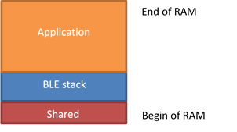
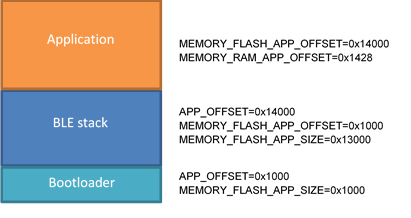

This document describes how to build a BLE demo application using the fixed BLE stack approach. It is possible to build a project containing the BlueNRG-1,2 stack library with all (or part) of its APIs and build a second project that does not contains the stack and nevertheless it can use it. In this way the second project, containing only the application, can be programmed into the device without reprogramming the BlueNRG-1,2 stack. This is valid as long as the Bluetooth stack does not have to be changed. The document content is valid for both BlueNRG-1 and BlueNRG-2 devices. Any reference to BlueNRG-1 device is also valid for the BlueNRG-2 device. Any specific difference is highlighted whenever it is needed.
Follow the list of key steps to be followed:
BLE fixed stack description
- In the partitioning illustrated in Figure 1:Flash memory partitioning, the BLE stack is programmed in a section of the flash together with a simple reset manager. Normally this application only has the task to jump to the application code and call the service routines in the application’s interrupt vector table once an interrupt occurs (necessary because interrupt vector table remapping is not supported in Cortex-M0).
- This simple reset manager may be replaced by a more complex application, e.g. a bootloader
|
|
|
| Figure 1: Flash memory partitioning |
- The reset manager should not use any variable in RAM, hence the only RAM space used by the reset manager firmware is the one used by the BLE library. Part of the RAM can be reserved for special variables shared between simple and main application, e.g. to perform a software activation of a bootloader. Figure 2: RAM partitioning shows the RAM statically allocated by the stack (blue area). The BlueNRG stack also needs additional RAM that is provided by the application during stack initialization. This space is allocated by the application.
|

|
| Figure 2: RAM partitioning |
Building project with BlueNRG-1, BlueNRG-2 stack
- Use Fixed_Stack project on Project\BLE_Examples folder to build a firmware that contains only the Bluetooth stack library and the reset manager. The projects for IAR Embedded Workbench for ARM, KEIL MDK-ARM and Atollic TrueSTUDIO are provided. Compared to a normal application using BlueNRG stack library, this project contains three special C files:
-
bluenrg_cmd_if.c: it defines an array that contains all the stack APIs (command table).
-
bluenrg_ev_if.c: an array is defined, which is used to store the pointers to the stack callbacks (event table).. These pointers must be provided by the application.
-
bluenrg_it_stub.c: in this file all the interrupt service routines are defined. The correct application's interrupt service routine is called by these functions when an interrupt occurs.
- For IAR and Keil, after the firmware is built, a batch script generates a library, btle_lib_symbols.a, containing the symbol table of the stack's function addresses. The pointers to the callback functions has to be stored in an array allocated in RAM (ev_call_table), whose symbol is provided in btle_lib_symbols.a. Using a library containing the addresses of all the symbols allows to directly call stack's functions without accessing them through the command table (faster access and less code). Not using a fixed address for command and event tables gives maximum flexibility to the linker for the allocation of structures.
- Instead, for Atollic no library is generated by the Fixed Stack project. The addresses where relevant structures are placed are forced by the linker script.
- Two macros need to be changed in case the linking process fails because space is not enough, or if the space reserved for the stack becomes lower: APP_OFFSET and MEMORY_FLASH_APP_SIZE.
- The preprocessor macro APP_OFFSET must be set to the offset of the first flash address of the main application. MEMORY_FLASH_APP_SIZE linker variable is used to avoid that the flash occupancy becomes higher than expected. If set it to a given value, the linker returns error if the size of the flash needed by the application is higher than the specified value.
- E.g. if after the building process the first available address in Flash (rounded to the beginning of the next sector) is 0x10053000, APP_OFFSET can be set to 0x14000 (0x10053000 - 0x10040000). MEMORY_FLASH_APP_SIZE must set to 0x14000 to be sure that the building process gives error if the size of the firmware exceeds this limit.
- After the firmware has been built, the map file must be analyzed to take note of the last address in RAM used by the stack (except for the CSTACK block). This is important to build a working application.
Building a project that uses a fixed BlueNRG-1, BlueNRG-2 stack
- BLE_SensorDemo_Fixed_Stack is a demonstration application on Project\BLE_Examples folder that that does not contain the Bluetooth library but uses the APIs provided by the library programmed inside the first area of the Flash.
- In order to correctly configure a project to use the fixed library, the symbols of the library must be taken into account by the linker during the linking process. All the pointers to the functions that are exported by the library are accessible through a table in Flash (command table). The pointers to the callbacks for events generated by the library are instead stored in a table in RAM (event table), so that the application can write its own pointers into this table.
- For IAR and Keil toolchains, the btle_lib_symbols.a file is generated by the Fixed_Stack project, so that this file can be used by application's project during linking phase to resolve all the required symbols. For Atollic, the addresses of the command and event tables are fixed (forced by the linker script), and hence no btle_lib_symbols.a is used.
- The bluenrg_stack_init_if.c file (for IAR and Keil) and the bluenrg1_lib_wrap.c file (for Atollic) are used in order to automatically register all the application callbacks without taking care of explicitly register them when using the fixed stack library. In addition, bluenrg1_lib_wrap.c file allows the application to call the stack's function through the command table.
- Two linker variables for the application's project need to be set to the proper values. MEMORY_FLASH_APP_OFFSET must be set to the same value specified for APP_OFFSET in the Fixed_Stack project. MEMORY_RAM_APP_OFFSET must be set with an address that is equal to (or greater than) the offset of first available RAM location. The map file generated together with the fixed stack library indicates which is the first RAM location that is available to the application.
- E.g.:
-
MEMORY_FLASH_APP_OFFSET=0x14000
-
MEMORY_RAM_APP_OFFSET=0x1428 (i.e. 0x20001428 - 0x20000000)
Using a bootloader
- When the application needs a second level bootloader (1) , the best solution is to place the bootloader at the beginning of the Flash. In this case the stack library must be allocated starting at a given offset inside the Flash. The offset can be provided to the linker through the MEMORY_FLASH_APP_OFFSET variable.
- E.g., if the bootloader occupies the first two sectors of the Flash, MEMORY_FLASH_APP_OFFSET must be set to 0x1000.
- (1) First level bootloader is in ROM and accessible through UART interface.
|

|
| Figure 3: Stack allocation in Flash with offset |
Sleep management and context save/restore
- In the example projects, the functions handling the sleep mode are kept inside application firmware. Context save before going to sleep is also done by the application. Instead, context restore is performed by the first firmware that is executed after exiting from sleep mode, i.e. the reset manager built with the fixed stack, or the bootloader if present. This allow to restore the context with minimum delay and to use as less memory stack as possible (2). Since the context restore is not performed by the application, the code can be excluded by defining the NO_SMART_POWER_MANAGEMENT macro.
- (2) Since functions may use memory stack, calling functions before context is restored may dirty the memory stack. For this purpose, the function handling the entrance and exit from the sleep mode saves and restore the firsts words of the memory stack which may have been corrupted by the execution of the code before the context restore.
Summary
Here a summary of the steps needed to use the Fixed Stack project and adapt an existing application to use the BlueNRG stack residing in a separate area of the Flash.
For "Fixed Stack" project:
-
Build "Fixed Stack" project. If necessary, change MEMORY_FLASH_APP_SIZE (for linker) to increase (or possibly reduce) the flash reserved for the BlueNRG Stack.
-
If MEMORY_FLASH_APP_SIZE has been changed, change also APP_OFFSET (for C preprocessor). It points to the base of the flash where the application resides and it should be equal to MEMORY_FLASH_APP_SIZE + MEMORY_FLASH_APP_OFFSET.
-
Take a note of the first available address in RAM (excluding CSTACK) from map file. (e.g. 0x2000143C).
For application project:
-
Copy required files from BLE_SensorDemo_Fixed_Stack project.
-
For IAR and Keil: copy bluenrg1_stack_init_if.c inside application src folder.
-
For Atollic: copy bluenrg1_lib_wrap.c inside application src folder.
-
Add Fixed_Stack/inc folder to the include directories.
-
Define NO_SMART_POWER_MANAGEMENT symbol for C compiler.
-
Define MEMORY_FLASH_APP_OFFSET for linker (equal to MEMORY_FLASH_APP_SIZE + MEMORY_FLASH_APP_OFFSET defined for Fixed Stack, e.g.0x14000)
-
Define MEMORY_RAM_APP_OFFSET for linker with the offset in RAM equal to the first available address in RAM (see step 3 for "Fixed Stack" project). E.g. 0x143C, aligned to a 32-bit word.
-
Remove bluenrg1_stack_lib.a library from the set of file to be compiled
-
Only for IAR and Keil: add btle_lib_symbols.a library from Fixed Stack project folder.

 1.8.10
1.8.10